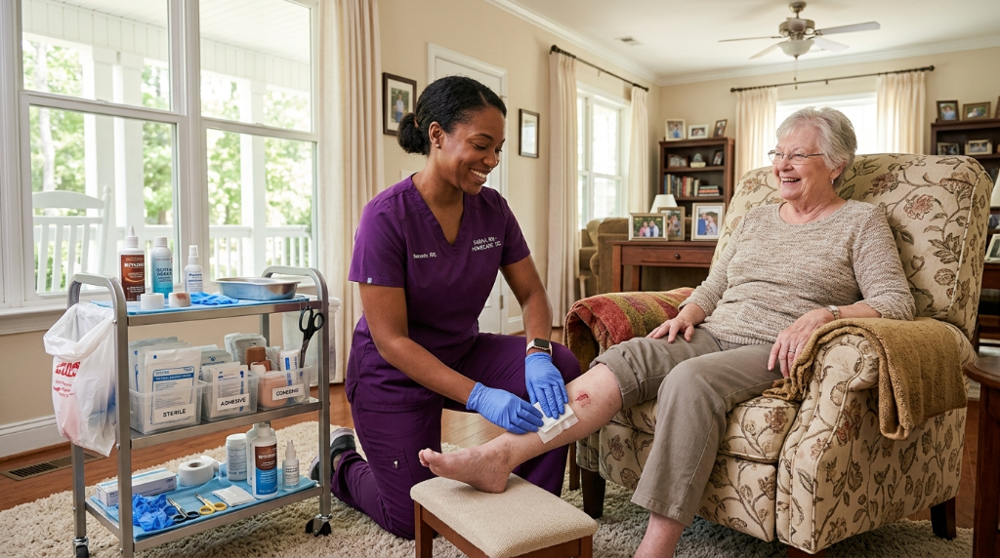

Wound Care in
Charleston, SC
Struggling with a wound that won't heal? Carolina Wound Care's Charleston clinic provides board-certified specialist treatment — at our West Ashley location on Carriage Lane or right in your own home. Medicare accepted.

The Charleston Area's Wound Care Specialists
We're an independent, patient-first practice — not affiliated with any hospital system. That means faster access, more personal care, and a team laser-focused on one thing: healing your wound.
Conveniently Located in West Ashley
Our clinic at 2 Carriage Lane, Suite 101 is easily accessible from Downtown Charleston, West Ashley, James Island, and the surrounding Lowcountry — with convenient parking and a welcoming environment.
We Come to You in Charleston
Can't make it to the clinic? Our mobile specialists bring the full suite of advanced treatments directly to your Charleston home, nursing facility, or assisted living — anywhere in the Lowcountry.
Board-Certified Specialists
Our wound care team are certified professionals trained in the most complex chronic wounds — not generalists. You get expert-level care from your very first visit.
Medicare & Most PPO Plans Accepted
We accept Medicare and most major PPO insurance plans serving the Charleston area. Our team verifies your benefits before your first visit — at no charge to you.
Same-Week Appointments
Wounds don't wait — and neither should you. We typically offer same-week appointments at our Charleston clinic or for mobile home visits throughout the greater Charleston metro area.
Hospital-Grade Treatments
UltraMist® therapy, advanced debridement, biologic grafts — the same advanced treatments found in hospital wound centers, delivered in Charleston without the hospital bureaucracy.
Wounds We Treat at Our Charleston Clinic
Every chronic wound that hasn't responded to standard care is a candidate for our specialist intervention — at our West Ashley clinic or your Charleston home.
Diabetic Foot Ulcers
The #1 reason for non-traumatic amputation in South Carolina — highly preventable with early specialist wound care from our Charleston clinic.
Venous & Arterial Leg Ulcers
Lower extremity wounds from poor circulation treated with compression therapy, advanced dressings, and specialist management in Charleston.
Pressure Injuries / Bed Sores
All stages from early redness to deep tissue wounds — treated at your Charleston home, Lowcountry nursing facility, or our West Ashley clinic.
Post-Surgical Wounds
Surgical incisions that dehisce or fail to close need specialist wound management to prevent infection and heal properly.
Infected or Stalled Wounds
Any wound showing signs of infection or failing to progress after 2–6 weeks requires specialist assessment — don't wait.
Any Non-Healing Wound
Not sure of your wound type? If it hasn't improved in 2–6 weeks, call our Charleston clinic. We'll assess and advise with no obligation.
We Serve All of Greater Charleston
Our Charleston clinic and mobile service cover every corner of the Lowcountry — from North Charleston to Kiawah Island and everywhere in between.
Our Charleston, SC Clinic
Carolina Wound Care — Charleston
Charleston, SC 29407
Mobile visits: flexible scheduling available
What Charleston Patients Say About Us
"I live in West Ashley and couldn't travel easily. The Carolina Wound Care team came right to my home in Charleston. My leg ulcer had been open for a year — they healed it in 10 weeks. Truly life-changing."
"After my knee surgery my incision wouldn't close. My doctor in Charleston referred me to Carolina Wound Care. They came to my home on James Island and within weeks the wound was completely healed."
"My father has diabetes and developed a foot ulcer. We were terrified about amputation. Carolina Wound Care came to his home in North Charleston — professional, kind, and thorough. Healed completely."
FAQs — Wound Care in Charleston, SC
Charleston's Wound Care Specialists Are Ready for You.
Don't let another week pass with a wound that isn't healing. Call our Charleston clinic today or request a mobile home visit anywhere in the Lowcountry — same-week appointments available, Medicare accepted.